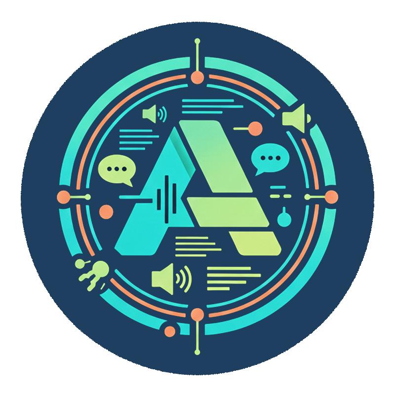

Adaptive Augmentation for Student Achievement
A free, open-source Chrome extension for neurodivergent students in further, higher education and beyond.

What AssisT is
Reading help
Word-by-word highlighting follows the student across any webpage.
Removes navigation, ads, sidebars. Renders in the student's preferred font and spacing.
Syllable colour-coding and grammar highlighting. Switchable with one click.
Extracts and reads from images, scanned PDFs, screenshots.
Writing help
Visual comfort
Tinted overlay across the whole screen. Colour, intensity, blend mode — fully adjustable. Evidence-based for Meares-Irlen-type visual stress.
Dark overlay with a clear reading window that follows the cursor. Filters distraction for ADHD and attention difficulties.
A horizontal guide line that tracks mouse movement. Supports visual tracking difficulties.
Suppresses animations globally. Essential for vestibular disorders and sensory sensitivities.
Study tools
Highlight and annotate text inline. Persistent across sessions, exportable.
Pin notes to any page. Persistent, resizable, colour-coded.
Sequential word display for students who benefit from controlled reading pace.
Floating focus timer. Customisable work and break durations.
Save and switch full personalisation sets in one tap. Share profiles across devices.
Font, size, line spacing, letter and word spacing. Satisfies WCAG 2.2 SC 1.4.12.
LMS integration
AssisT detects the LMS automatically — students don't need to configure anything.
AI assist
Concise summary of any selected text.
Rewrites dense academic language accessibly.
Converts a brief into a structured checklist.
Generates questions that deepen understanding.
Visualises concepts and relationships interactively.
Personalised learning sequence from a topic description.
Credibility and bias assessment for sources. AI outputs should be verified independently.
Finds agreements, contradictions, and themes across texts.
Free, for everyone
Any student, on any campus, on any device — installs it in 60 seconds. A disability services officer can recommend it. A student can install it themselves. A lecturer can model it in class.
How you can help
Try it yourself before recommending it to a student. Five minutes is enough.
→ chrome web store Step 02Add the AssisT product page to your student-facing AT resources and DSO handouts.
→ fiavaion.com/products/assist Step 03Watch the tutorial series — feature walkthroughs and setup guides for students and DSOs.
→ youtube.com/@fiavaion Step 04File a bug, request a feature, or start a Discussion on GitHub. Every release is shaped by it.
→ github discussionsfiavaion.com/products/assist · github.com/Fiavaion/AssisT
The roadmap ahead
So AssisT reaches students on every platform, not just Chromium.
A dedicated voice training tool for users with Dysarthria — calibrating the recognition engine to a student's individual speech patterns, rather than expecting students to adapt to the engine.
A password-protected lockdown profile, configured by the AT technician. Only the supports approved on a student's accommodation plan stay active — everything else (AI, web access, summarisation) is locked. No more all-or-nothing workarounds at exam time.
A full redesign of the control panel — clearer layout, better keyboard navigation, simpler first-run experience for students new to AT.
Shaped by AT technicians and learning support professionals. The goal is not a finished product — it's a tool that keeps improving with the community that uses it.
Thank you
AssisT is free, open source, and built on the idea that access to learning tools shouldn't depend on a diagnosis, a licence, or an institution's budget.